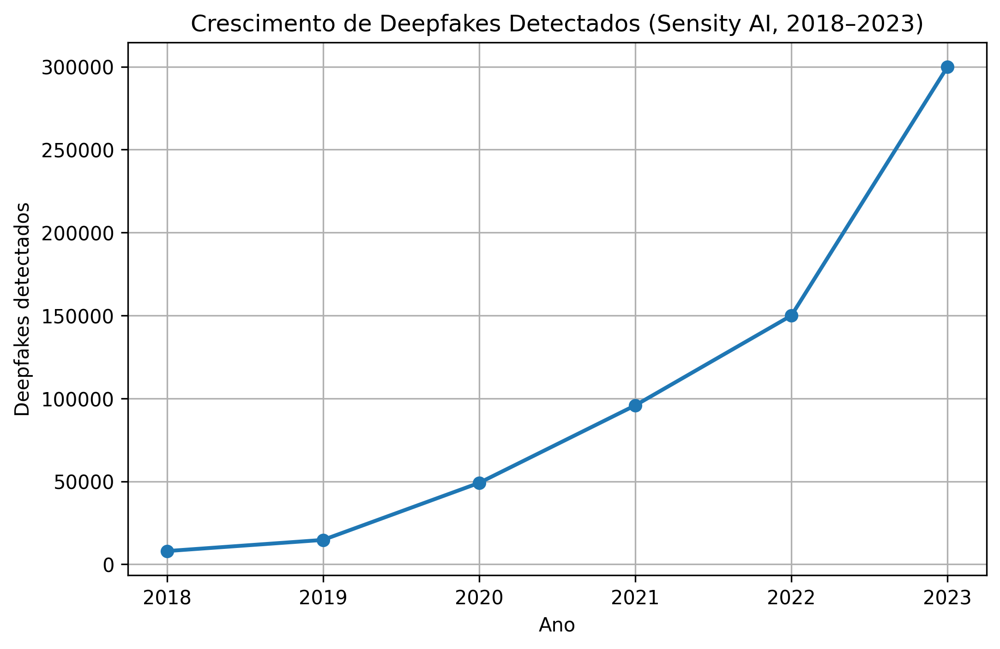

4.1 Dificuldade da deteção humana e expansão
O avanço acelerado dos conteúdos sintéticos, especialmente dos deepfakes, tem tornado a sua deteção cada vez mais difícil para o ser humano. À medida que os modelos de inteligência artificial evoluem, os conteúdos gerados apresentam níveis de realismo extremamente elevados, reduzindo a capacidade das pessoas distinguirem entre conteúdos reais e artificiais.
Esta dificuldade é agravada pela rápida disseminação destes conteúdos nas redes sociais e plataformas digitais, onde são frequentemente partilhados sem verificação prévia. A deteção manual torna-se impraticável em grande escala, exigindo o desenvolvimento de ferramentas automáticas cada vez mais sofisticadas.

4.2 Impactos na privacidade e segurança
Os conteúdos sintéticos levantam sérias preocupações relacionadas com a privacidade e a segurança digital. Técnicas como a clonagem de voz e a manipulação de imagens permitem a criação de conteúdos fraudulentos capazes de enganar indivíduos, empresas e instituições.
Estes conteúdos podem ser utilizados para esquemas de fraude, roubo de identidade, extorsão e disseminação de desinformação. Em contextos mais críticos, podem comprometer sistemas de autenticação biométrica e processos de verificação baseados em voz ou imagem.
4.3 Crescimento e impacto social dos deepfakes
O crescimento exponencial dos deepfakes representa um desafio significativo para a confiança digital. À medida que estas tecnologias se tornam mais acessíveis, o número de conteúdos falsificados aumenta drasticamente, afetando a credibilidade da informação online.
Este fenómeno contribui para a erosão da confiança pública nos meios digitais, dificultando a distinção entre factos e falsificações. Consequentemente, torna-se essencial investir em soluções tecnológicas, regulamentação e literacia digital para mitigar os impactos negativos dos deepfakes na sociedade.